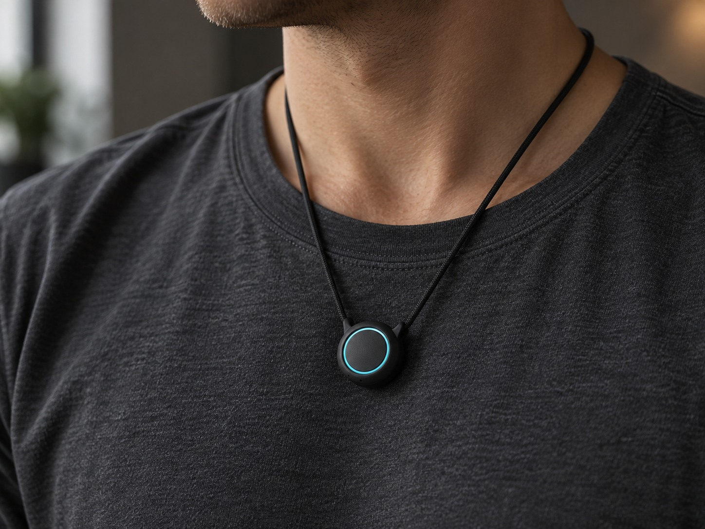
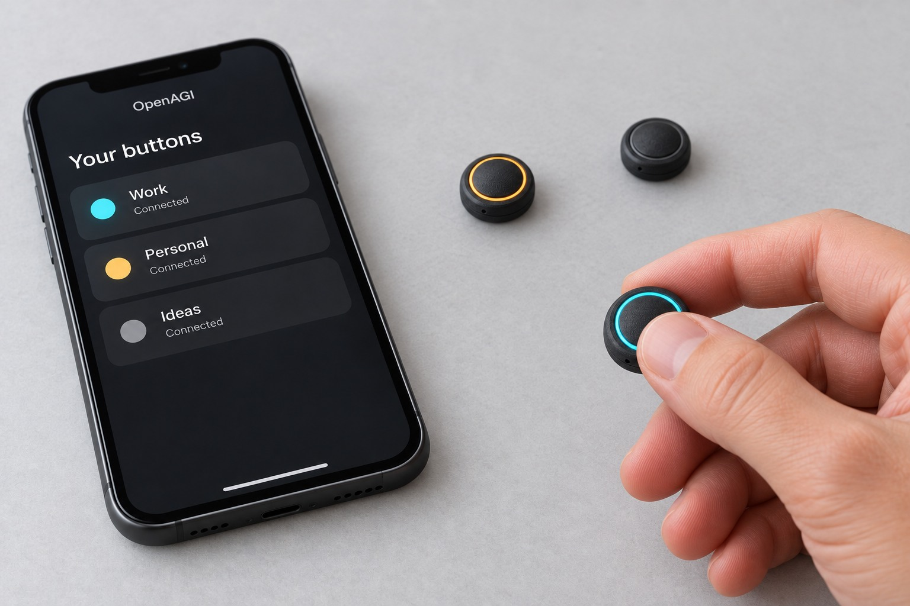

OpenAGI · The hardware exploration
Your agent.
Within reach.
An idea on a walk. A question on the way.
A connection to the OpenAGI you make your own.
One agent. Many ways to reach it.
Choose the shape.
Keep your world.
A ring. A pocket display. A button you build yourself. The device is a way in. OpenAGI brings the context, memory, and tools.
Explore four hardware paths with supplier links and clear connection guides. Or start with a few parts and make something personal.

Less ceremony. More life.
A thought.
A few words.
Carry on.
We’re exploring small, deliberate ways to reach your agent—without another screen to live inside.
The connection
A small companion.
A bigger picture.
Your agent lives on your computer or server. The device captures a thought; a phone app or custom bridge brings it to OpenAGI. Each of these four connections is still an integration project.
Your device
Press a button. Capture a thought.
The connection
Sync through an app or a custom bridge.
Your OpenAGI
Your context, memory, and tools.
An exploration of the feeling
A little light.
A clear intention.
Hold. Speak. Let go.
Imagine a button that tells you where things stand.
Hold the button and speak. Let go when you’re done.
Interactive concept. No audio is recorded.
Press and hold to try it.
Or use Space or Enter.


Dot · Concept imageryA little curiosity goes a long way
Make it
your own.
A microphone. A button. A few parts.
A companion you can understand and shape.
Our prototype notes start with available development boards, real dimensions, and a clear view of what needs building next.
Explore the DIY path See the original Dot conceptBegin with what you have